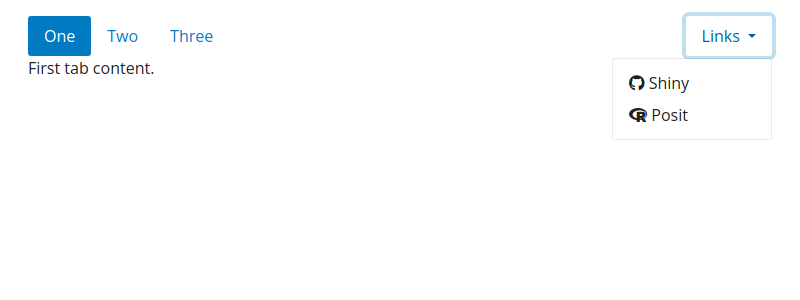
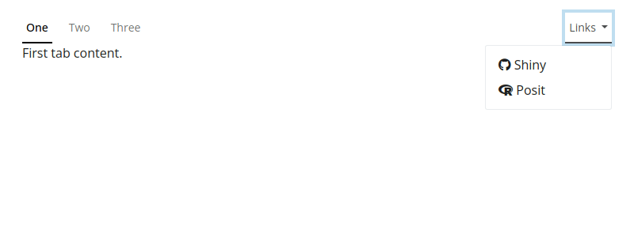
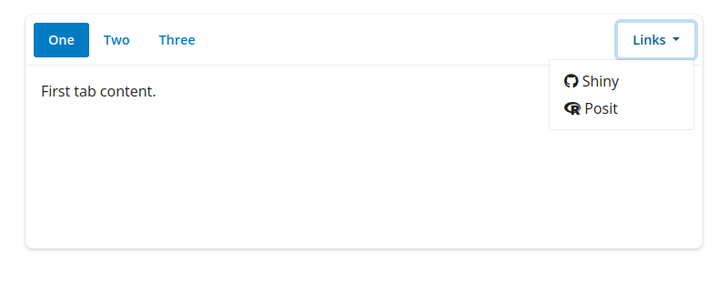

Render a collection of nav_panel() items into a container.
Usage
navset_tab(..., id = NULL, selected = NULL, header = NULL, footer = NULL)
navset_pill(..., id = NULL, selected = NULL, header = NULL, footer = NULL)
navset_underline(..., id = NULL, selected = NULL, header = NULL, footer = NULL)
navset_pill_list(
...,
id = NULL,
selected = NULL,
header = NULL,
footer = NULL,
well = TRUE,
fluid = TRUE,
widths = c(4, 8)
)
navset_hidden(..., id = NULL, selected = NULL, header = NULL, footer = NULL)
navset_bar(
...,
title = NULL,
id = NULL,
selected = NULL,
sidebar = NULL,
fillable = TRUE,
gap = NULL,
padding = NULL,
position = c("static-top", "fixed-top", "fixed-bottom"),
header = NULL,
footer = NULL,
bg = NULL,
inverse = "auto",
collapsible = TRUE,
fluid = TRUE
)
navset_card_tab(
...,
id = NULL,
selected = NULL,
title = NULL,
sidebar = NULL,
header = NULL,
footer = NULL,
height = NULL,
full_screen = FALSE,
wrapper = card_body
)
navset_card_pill(
...,
id = NULL,
selected = NULL,
title = NULL,
sidebar = NULL,
header = NULL,
footer = NULL,
height = NULL,
placement = c("above", "below"),
full_screen = FALSE,
wrapper = card_body
)
navset_card_underline(
...,
id = NULL,
selected = NULL,
title = NULL,
sidebar = NULL,
header = NULL,
footer = NULL,
height = NULL,
full_screen = FALSE,
wrapper = card_body
)Arguments
- ...
a collection of
nav_panel()items.- id
a character string used for dynamically updating the container (see
nav_select()).- selected
a character string matching the
valueof a particularnav_panel()item to selected by default.- header
UI element(s) (tags) to display above the nav content.
- footer
UI element(s) (tags) to display below the nav content.
- well
TRUEto place a well (gray rounded rectangle) around the navigation list.- fluid
TRUEto use fluid layout;FALSEto use fixed layout.- widths
Column widths of the navigation list and tabset content areas respectively.
- title
A (left-aligned) title to place in the card header/footer. If provided, other nav items are automatically right aligned.
- sidebar
A
sidebar()component to display on everynav_panel()page.- fillable
Whether or not to allow
fillitems to grow/shrink to fit the browser window. IfTRUE, allnav_panel()pages arefillable. A character vector, matching thevalueofnav_panel()s to be filled, may also be provided. Note that, if asidebaris provided,fillablemakes the main content portion fillable.- gap
A CSS length unit defining the
gap(i.e., spacing) between elements provided to....- padding
Padding to use for the body. This can be a numeric vector (which will be interpreted as pixels) or a character vector with valid CSS lengths. The length can be between one and four. If one, then that value will be used for all four sides. If two, then the first value will be used for the top and bottom, while the second value will be used for left and right. If three, then the first will be used for top, the second will be left and right, and the third will be bottom. If four, then the values will be interpreted as top, right, bottom, and left respectively.
- position
Determines whether the navbar should be displayed at the top of the page with normal scrolling behavior (
"static-top"), pinned at the top ("fixed-top"), or pinned at the bottom ("fixed-bottom"). Note that using"fixed-top"or"fixed-bottom"will cause the navbar to overlay your body content, unless you add padding, e.g.:tags$style(type="text/css", "body {padding-top: 70px;}")- bg
a CSS color to use for the navbar's background color.
- inverse
Either
TRUEfor a light text color orFALSEfor a dark text color. If"auto"(the default), the best contrast tobgis chosen.- collapsible
TRUEto automatically collapse the navigation elements into an expandable menu on mobile devices or narrow window widths.- height
Any valid CSS unit (e.g.,
height="200px"). Doesn't apply when a card is madefull_screen(in this case, consider setting aheightincard_body()).- full_screen
If
TRUE, an icon will appear when hovering over the card body. Clicking the icon expands the card to fit viewport size.- wrapper
A function (which returns a UI element) to call on unnamed arguments in
...which are not already card item(s) (likecard_header(),card_body(), etc.). Note that non-card items are grouped together into onewrappercall (e.g. givencard("a", "b", card_body("c"), "d"),wrapperwould be called twice, once with"a"and"b"and once with"d").- placement
placement of the nav items relative to the content.
Examples
A basic example
This first example creates a simple tabbed navigation container with two tabs.
The tab name and the content of each tab are specified in the nav_panel() calls
and navset_tab() creates the tabbed navigation around these two tabs.
library(htmltools)
navset_tab(
nav_panel(title = "One", p("First tab content.")),
nav_panel(title = "Two", p("Second tab content."))
)
In the rest of the examples, we'll include links among the tabs (or pills) in the navigation controls.
navset_tab()
You can fully customize the controls in the navigation component.
In this example, we've added a direct link to the Shiny repository using nav_item().
We've also included a dropdown menu using nav_menu()
containing an option to select a third tab panel
and another direct link to Posit's website.
Finally, we've separated the primary tabs on the left
from the direct link and dropdown menu on the right
using nav_spacer().
navset_tab(
nav_panel(title = "One", p("First tab content.")),
nav_panel(title = "Two", p("Second tab content.")),
nav_panel(title = "Three", p("Third tab content")),
nav_spacer(),
nav_menu(
title = "Links",
nav_item(link_shiny),
nav_item(link_posit)
)
)
navset_pill()
navset_pill() creates a navigation container that behaves exactly like navset_tab(),
but the tab toggles are pills or button-shaped.
navset_pill(
nav_panel(title = "One", p("First tab content.")),
nav_panel(title = "Two", p("Second tab content.")),
nav_panel(title = "Three", p("Third tab content")),
nav_spacer(),
nav_menu(
title = "Links",
nav_item(link_shiny),
nav_item(link_posit)
)
)
navset_underline()
navset_underline() creates a navigation container that behaves exactly like navset_tab() and navset_pill(), but the active/focused navigation links are styled with an underline.
navset_underline(
nav_panel(title = "One", p("First tab content.")),
nav_panel(title = "Two", p("Second tab content.")),
nav_panel(title = "Three", p("Third tab content")),
nav_spacer(),
nav_menu(
title = "Links",
nav_item(link_shiny),
nav_item(link_posit)
)
)
navset_card_tab()
The tabbed navigation container can also be used in a card() component
thanks to navset_card_tab().
Learn more about this approach in the
article about Cards,
including how to add a shared sidebar
to all tabs in the card
using the sidebar argument of navset_card_tab().
navset_card_tab(
nav_panel(title = "One", p("First tab content.")),
nav_panel(title = "Two", p("Second tab content.")),
nav_panel(title = "Three", p("Third tab content")),
nav_spacer(),
nav_menu(
title = "Links",
nav_item(link_shiny),
nav_item(link_posit)
)
)
navset_card_pill()
Similar to navset_pill(),
navset_card_pill() provides a pill-shaped variant to navset_card_tab().
You can use the placement argument to position the navbar
"above" or "below" the card body.
navset_card_pill(
placement = "above",
nav_panel(title = "One", p("First tab content.")),
nav_panel(title = "Two", p("Second tab content.")),
nav_panel(title = "Three", p("Third tab content")),
nav_spacer(),
nav_menu(
title = "Links",
nav_item(link_shiny),
nav_item(link_posit)
)
)
navset_card_underline()
navset_card_underline() provides a card-based variant of navset_underline().
navset_card_underline(
nav_panel(title = "One", p("First tab content.")),
nav_panel(title = "Two", p("Second tab content.")),
nav_panel(title = "Three", p("Third tab content")),
nav_spacer(),
nav_menu(
title = "Links",
nav_item(link_shiny),
nav_item(link_posit)
)
)
navset_pill_list()
Furthermore, navset_pill_list() creates a vertical list of navigation controls
adjacent to, rather than on top of, the tab content panels.
navset_pill_list(
nav_panel(title = "One", p("First tab content.")),
nav_panel(title = "Two", p("Second tab content.")),
nav_panel(title = "Three", p("Third tab content")),
nav_spacer(),
nav_menu(
title = "Links",
nav_item(link_shiny),
nav_item(link_posit)
)
)
page_navbar()
Finally, page_navbar() provides full-page navigation container
similar to navset_underline() but where each nav_panel() is treated as a full page of content
and the navigation controls appear in a top-level navigation bar.
Note also that the underline styling can be removed via the underline argument.
page_navbar(
title = "My App",
bg = "#0062cc",
underline = TRUE,
nav_panel(title = "One", p("First tab content.")),
nav_panel(title = "Two", p("Second tab content.")),
nav_panel(title = "Three", p("Third tab content")),
nav_spacer(),
nav_menu(
title = "Links",
align = "right",
nav_item(link_shiny),
nav_item(link_posit)
)
)
See also
nav_panel(), nav_panel_hidden() create panels of content.
nav_menu(), nav_item(), nav_spacer() create menus, items, or
space in the navset control area.
nav_insert(), nav_remove() programmatically add or remove nav
panels.
nav_select(), nav_show(), nav_hide() change the state of a
nav_panel() in a navset.
Other Panel container functions:
nav-items,
nav_select()